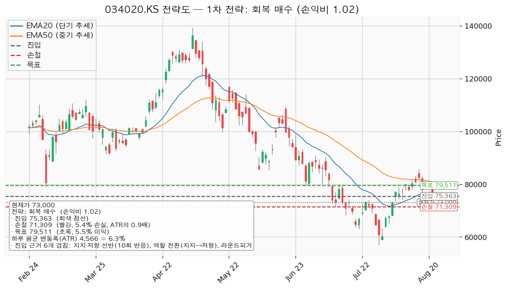
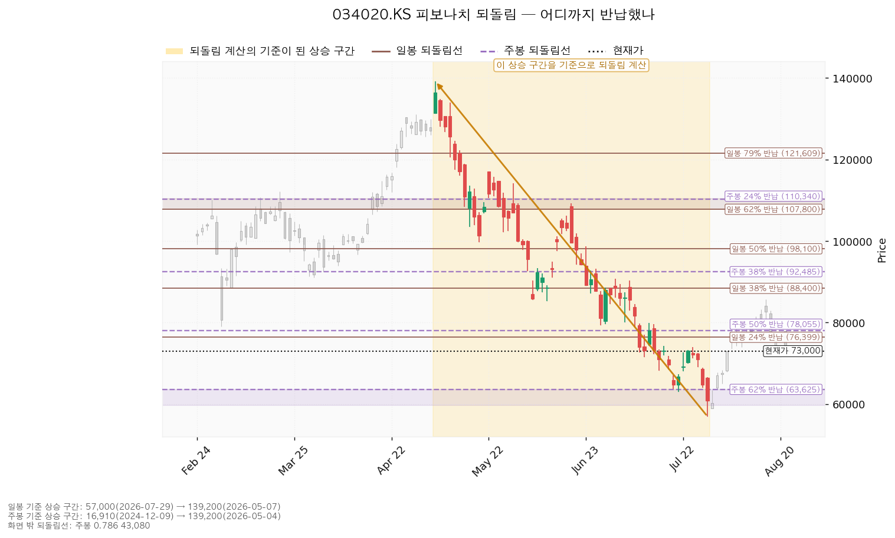
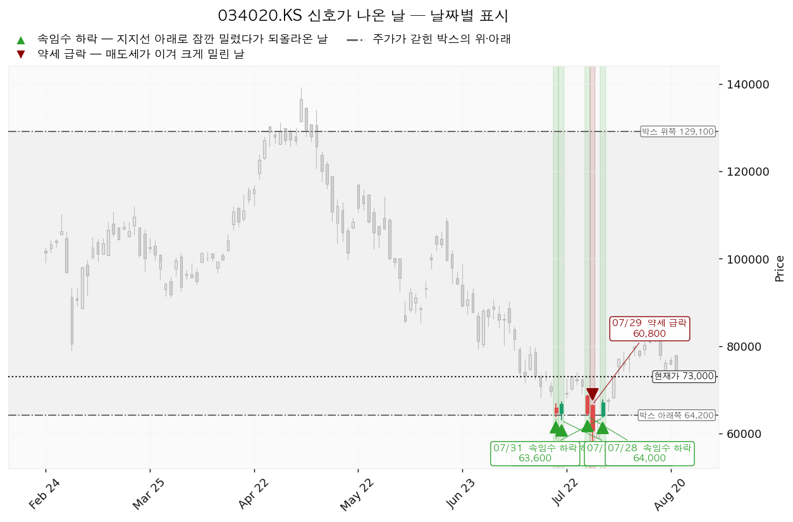
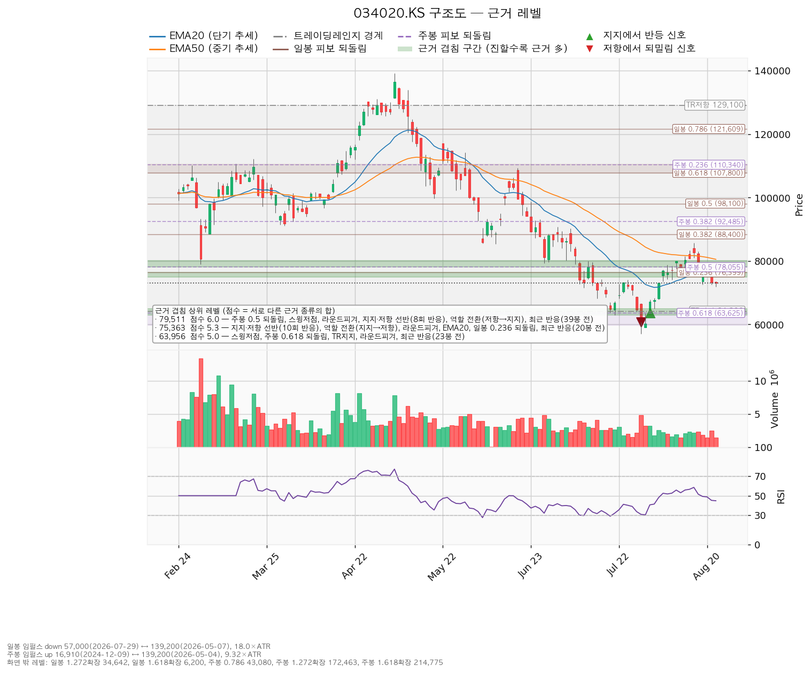

| 구분 | 가격 | 판정 방식 | 현재 상태 |
|---|---|---|---|
| 폐기선 | 64,200원 | 이탈 후 3거래일 내 회복 실패 + 반등에서 저항으로 확인 | 유지 중 |
| 회복선 | 75,363원 | 일봉 종가로 회복한 뒤 되돌림에서 지지되는지 확인 | 회복 대기 |
| 확인선 | 129,100원 | 일봉 종가 돌파 후 되돌림 지지 확인 | 미돌파 |
폐기선의 근거는 박스 하단이고, 회복선의 근거는 10회 반응한 지지·저항 선반 + 저항으로 역할이 바뀐 자리 + 라운드피겨(75,000원)입니다. 확인선은 박스 상단입니다.
| 항목 | 값 |
|---|---|
| 현재가 | 73,000원 |
| 20일 지수이동평균(EMA20) | 75,615원 (현재가 아래에 저항으로 위치) |
| 50일 지수이동평균(EMA50) | 80,527원 |
| RSI(14) — 최근 상승·하락 힘의 균형 지표 | 44.76 (중립 아래, 과매도 아님) |
| ATR — 하루 평균 변동폭 | 4,566원 |
| 직전 스윙 고점 / 저점 | 85,700원(2026-08-14) / 57,000원(2026-07-29) |
| 횡보 박스 | 64,200원 ~ 129,100원 (유효) |
| 컨센서스 목표주가 / 투자의견 | 127,429원 / strong_buy |
박스는 어느 구간을 보고 판정했는지: 조회된 일봉은 727봉이며, 엔진은 40봉·90봉·180봉을 모두 시험해 180봉(약 9개월치) 창을 채택했습니다. 40봉 창은 가격 수용도 0.85, 90봉 창은 방향성 쏠림이 0.705로 커서 횡보로 인정되지 않았고, 180봉 창이 수용도 0.972 · 쏠림 0.061로 가장 잘 지켜졌습니다. 박스 폭은 하루 변동폭의 14.21배로 매우 넓은 박스입니다.
직전 구간에서 어떻게 들어왔는가: 이 박스 직전 구간은 23,120원~88,667원이었고 가격은 그 구간을 위로 뚫고 올라와 현재 박스로 진입했습니다. 즉 아래에서 올라온 자리이므로 재축적(다시 모으는 자리)과 분산(넘기는 자리)의 갈림길입니다. 박스 모양만으로는 매집이라 단정할 수 없고, 갈리는 것은 박스 안쪽에서 일어나는 일입니다.
신호와 국면 후보: 국면 후보는 매집(물량을 조용히 모으는 국면)이며, 근거는 박스 하단 부근에서 나온 속임수 하락(하단을 잠깐 뚫고 되돌아 올라오는 움직임, 영문으로 spring이라 부릅니다)입니다. 다만 이는 어디까지나 "후보"이며, 7월 29일의 약세 급락 신호가 같은 구간에 섞여 있다는 점은 아직 매집이 확정되지 않았다는 반증으로 남겨두어야 합니다.
이번 산출에서 현재가 추격을 말리는 표시는 붙지 않았습니다(지지 확인형 셋업의 진입가가 현재가 부근이기 때문입니다).
| 셋업 | 구조 증명도 | 진입 | 손절 | 목표 | 손익비 | 전 구간 손익비 | 하한 손익비 |
|---|---|---|---|---|---|---|---|
| 회복 매수(대표) | 회복 확인형 (증명도 1.00) | 75,363원 (현재가 대비 +3.24%) | 71,309원 (-5.4%) | 79,511원 (+5.5%) | 1:1.02 | 1.02 (단일 목표) | 해당 없음 |
| 지지 확인 매수 | 지지 확인형 (증명도 0.85) | 73,000원 (현재가, +0.00%) | 69,254원 | 79,511원 | 1:1.74 | 1.19 | 0.32 |
무효화 3단계 (회복 매수, 기준선 75,363원) 1. 관찰 — 일봉 종가가 75,363원 아래로 마감. 구조 이탈이 시작된 것이나 되돌아 올라오면 속임수 하락(잠깐 뚫고 되돌아 올라오는 움직임)일 수 있어 아직 무효가 아닙니다. 행동: 신규 진입만 중단하고 집행 손절은 그대로 둡니다. 2. 경고 — 이탈 후 3거래일 안에 75,363원을 종가로 회복하지 못함. 저항 회복 실패 쪽이 우세해집니다. 행동: 잔여 비중 축소, 반등 시 이 가격에서의 반응을 확인합니다. 3. 무효 — 반등이 75,363원에서 막히고 그 아래로 되밀림(지지가 저항으로 전환). 행동: 포지션 정리 후 새 구조가 만들어질 때까지 관망합니다.
집행 손절 71,309원은 위 판정이 몇 단계에 있든 무관하게 별도로 작동합니다. 장중 일시 이탈은 어느 단계에도 해당하지 않습니다(종가 기준입니다).
엔진은 손익비 1.02 × 구조 증명도(회복 확인형) × 근거 겹침 5.3점으로 회복 매수를 대표 셋업으로 골랐습니다. 손익비만 보면 지지 확인 매수(1.74)가 더 높지만 구조 증명도가 낮아 대표로 삼지 않았습니다. 즉 지지 확인 매수는 손익비는 크지만 구조가 아직 증명되지 않은 거래이고, 회복 매수는 저항을 종가로 되찾은 뒤에 들어가므로 진입가는 불리하지만 구조가 먼저 증명되는 거래입니다. 실무적으로는 두 셋업 모두 손익비가 2를 넘지 못하므로, 어느 쪽을 택하든 평소보다 작은 크기가 타당합니다.

일봉 되돌림 — 하락 되돌림입니다. 기준 구간은 2026-05-07 고점 139,200원 → 2026-07-29 저점 57,000원이며, 이 구간의 크기는 하루 변동폭의 18.0배로 충분히 유효합니다. 하락 뒤 얼마나 되돌렸는지를 보는 선이므로 아래 값들은 저항입니다.
| 되돌림 | 가격 | 의미 |
|---|---|---|
| 0.236 | 76,399원 | 하락폭의 약 24% 회복 — 회복선 75,363원 겹침 구간의 상단 |
| 0.382 | 88,400원 | 하락폭의 약 38% 회복 |
| 0.5 | 98,100원 | 절반 회복 — 8회 반응 선반 97,150원과 겹침 |
| 0.618 | 107,800원 | 골든포켓 하단 |
| 0.786 | 121,609원 | — |
현재가 73,000원은 일봉 0.236 되돌림선 아래에 있습니다. 즉 5월 고점부터의 하락분을 4분의 1도 되돌리지 못한 상태이며, 이것이 회복 매수 셋업이 "저항 회복 확인 후"를 요구하는 이유입니다.
주봉 되돌림 — 상승 되돌림입니다. 기준 구간은 2024-12-09 저점 16,910원 → 2026-05-04 고점 139,200원(하루 변동폭의 9.32배)이며, 아래 값들은 지지입니다. 0.5 = 78,055원, 0.618 = 63,625원, 골든포켓은 59,712~63,625원입니다. 주목할 점은 주봉 0.618 되돌림(63,625원)이 박스 하단 64,200원과 사실상 같은 자리라는 것으로, 폐기선 64,200원이 장기 구조에서도 마지막 방어선임을 뜻합니다. 반대로 주봉 0.5 되돌림 78,055원은 목표 구간(78,055~80,100원)의 하단을 이룹니다.

| 날짜 | 신호 | 가격 | 해석 |
|---|---|---|---|
| 2026-07-20 | 속임수 하락(spring) | 63,800원 | 박스 하단을 잠깐 내주고 되돌아 올라온 움직임 |
| 2026-07-21 | 속임수 하락(spring) | 63,000원 | 같은 성격의 재테스트 |
| 2026-07-28 | 속임수 하락(spring) | 64,000원 | 세 번째 하단 테스트 |
| 2026-07-29 | 약세 급락 | 60,800원 | 매도세가 이겨 크게 밀린 날 — 이날 거래량은 평균의 1.72배였고 저가 57,000원을 찍었습니다 |
| 2026-07-31 | 속임수 하락(spring) | 63,600원 | 투매 직후 하단 회복 |
7월 하순에 하단 테스트가 네 차례 몰려 있고 그 사이에 매도 우위 신호가 한 번 끼어 있습니다. 이후 8월의 두 차례 지지 테스트(8/19, 8/24)는 거래량이 평균의 0.80배·0.64배로 확연히 줄어든 채 저점을 71,000원대에서 지켰습니다. 이 거래량 축소가 매집 해석의 핵심 근거이며, 동시에 7월 29일 매도 우위 신호는 아직 반증 재료로 남아 있습니다.

겹침 점수는 서로 다른 근거 "종류"의 가중치 합입니다. 같은 종류가 여러 개 붙어도 한 번만 가산되므로, 점수가 높다는 것은 성격이 다른 증거들이 같은 가격대에서 만난다는 뜻입니다. 특히 지지·저항 선반은 계산으로 유도된 선(이평·피보·라운드피겨)과 달리 "가격이 실제로 여러 번 반응한 수평대"라는 독립된 증거입니다.
| 가격대 | 점수 | 겹치는 근거 | 성격 |
|---|---|---|---|
| 79,511원 (78,055~80,100) | 6.0 | 주봉 0.5 되돌림, 스윙저점, 라운드피겨, 지지·저항 선반(8회 반응), 역할 전환(저항→지지), 최근 반응(39봉 전) | 두 셋업 공통 목표 |
| 75,363원 (74,900~76,399) | 5.3 | 지지·저항 선반(10회 반응), 역할 전환(지지→저항), 라운드피겨, EMA20, 일봉 0.236 되돌림, 최근 반응(20봉 전) | 회복선 / 회복 매수 진입 |
| 63,956원 (63,000~65,000) | 5.0 | 스윙저점, 주봉 0.618 되돌림, 박스 하단, 라운드피겨, 최근 반응(23봉 전) | 폐기선 구간 |
| 72,967원 (72,450~74,000) | 3.9 | 지지·저항 선반(8회 반응), 역할 전환(저항→지지), 스윙고점, 최근 반응(20봉 전) | 현재가가 딛고 선 자리 |
| 85,200원 (84,800~85,700) | 3.5 | 지지·저항 선반(10회 반응), 라운드피겨, 스윙저점, 스윙고점, 최근 반응(5봉 전) | 다음 저항 |
| 97,467원 (97,150~98,100) | 3.2 | 지지·저항 선반(8회 반응), 역할 전환(저항→지지), 일봉 0.5 되돌림 | 중기 저항 |

이전 리포트는 현재가 73,300원 시점에서 대표 셋업을 회복 매수 진입 74,881원 / 손절 72,602원 / 손익비 2.22로 제시했습니다. 이번 산출에서 같은 성격의 대표 셋업은 진입 75,363원 / 손절 71,309원 / 손익비 1.02로 바뀌었으며, 가격이 73,300원에서 73,000원으로 소폭 내린 것보다 셋업 산출 방식의 변화가 훨씬 큰 영향을 미쳤습니다. 첫째, "가격이 실제로 여러 번 반응한 수평 가격대(선반)"가 독립 근거로 추가되면서 진입 기준이 10회 반응한 74,900~76,399원 선반 구간으로 옮겨져 진입가가 74,881원에서 75,363원으로 올라갔습니다. 둘째, 그리고 결정적으로 손절이 근거 겹침 구간(72,450~74,000원) 안에서 그 구간 아래로 밀려났습니다 — 이전의 72,602원은 겹침 구간 내부였고, 이번의 71,309원은 구간 하단 아래입니다. 이 변경은 "지지 구간 안에서 흔드는 움직임에 털리지 않도록" 손절을 물린 것이므로 승률 측면에서는 개선이지만, 리스크 폭이 넓어진 만큼 손익비가 2.22에서 1.02로 낮아졌습니다. 즉 이전 리포트의 2.22는 손절을 지지 구간 안쪽에 둔 덕에 나온 숫자였고, 이번 1.02가 같은 목표에 대한 더 정직한 값입니다. 셋째, 박스 안쪽 판정이 매집 우위이고 현재가가 8회 반응 선반 위에 있다는 세 조건이 충족되어 지지 확인 매수(진입 73,000원 / 손절 69,254원 / 손익비 1.74)가 새로 추가되었고, 그 결과 이번에는 현재가 추격을 말리는 판정이 붙지 않았습니다.
| 항목 | 값 | 해석 |
|---|---|---|
| 컨센서스 목표주가 | 127,429원 | 박스 상단 129,100원과 거의 같은 자리 |
| 투자의견 | strong_buy | 애널리스트 시각은 강세 |
| 후행 PER / 선행 EPS | 조회되지 않음 | 밸류에이션 교차검증 불가 |
컨센서스 목표주가 127,429원이 박스 상단 129,100원과 사실상 같은 가격에 놓인 점은 흥미롭습니다. 다만 이는 애널리스트 목표가가 곧 차트상 확인선이라는 뜻일 뿐, 현재가에서 그 가격까지 가는 경로가 확인되었다는 뜻은 아닙니다. 실적 배수(PER·선행 EPS)는 이번 조회에서 값이 오지 않아 밸류에이션 관점의 교차검증은 하지 못했습니다.
주도주 판정: 현시점에서는 주도주가 아닙니다. 근거는 ① 현재가가 EMA20(75,615원)·EMA50(80,527원) 아래에 있고, ② 5월 고점 139,200원 대비 하락분을 일봉 0.236 되돌림(76,399원)조차 회복하지 못했으며, ③ RSI가 44.76으로 중립 아래에 머물러 있다는 점입니다. 반면 박스 안쪽이 매집 우위이고 컨센서스가 강세라는 점은 주도주 복귀 후보로서의 조건입니다. 회복선 75,363원을 일봉 종가로 되찾고 EMA20 위에 안착하는 것이 그 첫 관문입니다. 섹터 강도(원전·발전기자재 섹터의 상대강도)는 이 리포트의 데이터 범위 밖이므로, 주도주 여부를 최종 확정하려면 시황 분석의 섹터 강도 맥락을 함께 보셔야 합니다.
*본 자료는 정보 제공 목적이며 투자 권유가 아닙니다. 최종 투자 판단과 그 결과에 대한 책임은 투자자 본인에게 있습니다.*